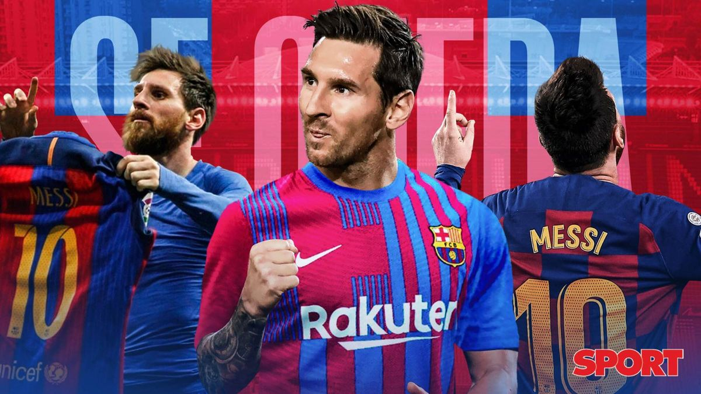
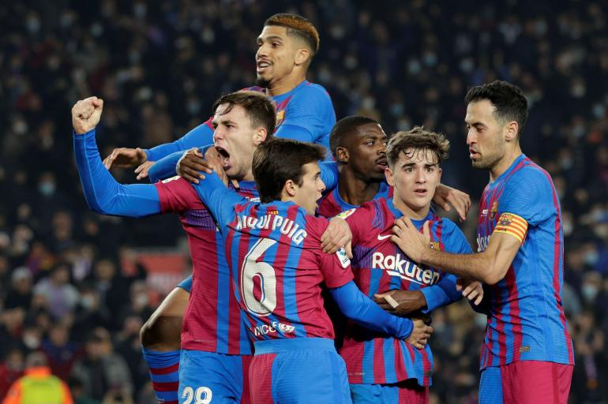
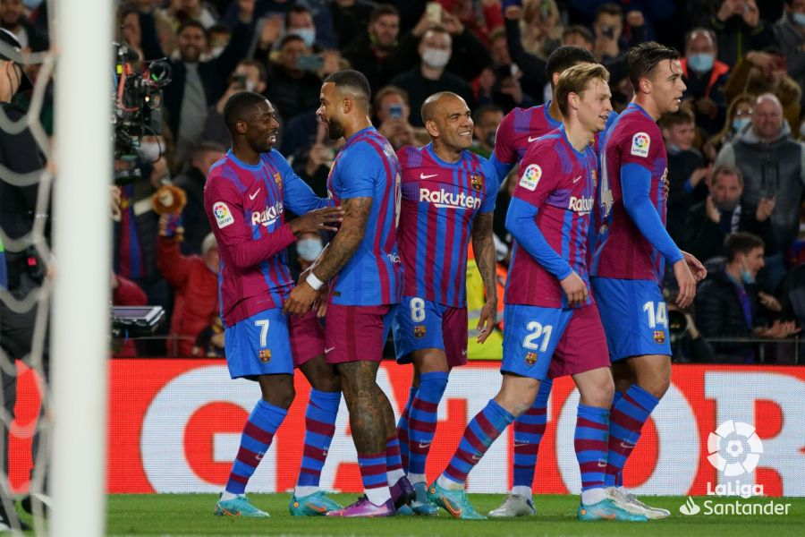

FC barcelona
FC barcelona,Es uno de los mejores equipos de la liga española ,Este esta inscrito actualmente en las mayores ligas europeas ademas de contar con varios titulos muy reconocidos
El triplet
Este famoso acontecimiento se dio cuando el FC Barcelona gano los 3 mayores titulos en un año , llevandose con ellos la famosa "Liga española,Champions,Copa del Rey"
La plantilla actual del FC Barcelona ha variado mucho en los ultimos años , esta cuenta con estrellas mundiales como "Aubameyang,Menphis,Ferran" que ademas somn ultimas incorporaciones
.Hasta ese momento, es un guiño sin importancia a la película, dado que ese tipo de conexión misteriosa y creepy con el asesino es parte de la trama, pero si prestamos atención a la pantalla, porque el clip es corto y rápido, hay un pequeño flash que nos deja ver una imagen casi subliminal que nos muestra una web.
La quiebra
Los años 1930 fueron de gran crisis para el club. Se inició la década con el suicidio de Hans Gamper, probablemente debido a la catastrófica situación económica en la que se vio sumido tras el desplome de la bolsa de Wall Street en 1929.48 En la temporada 1933-34 el F. C. Barcelona terminó penúltimo, evitando la última plaza que hasta la temporada anterior suponía el descenso de categoría. Esa temporada quedaría por delante del Arenas de Guecho por seis puntos de diferencia, aunque el equipo vizcaíno evitó el descenso gracias a la ampliación de la Primera División a doce equipos planificada por la Federación Española antes del inicio de la temporada y que supuso que esa temporada no hubiera plaza de descenso.
Actualmente el Fc barcelona ha reacaido en la quiebra gracias a su expresidente , llegando a tener un margen salarial de -144 millones de euros , pero posee el patrimonio suficiente para resurgir